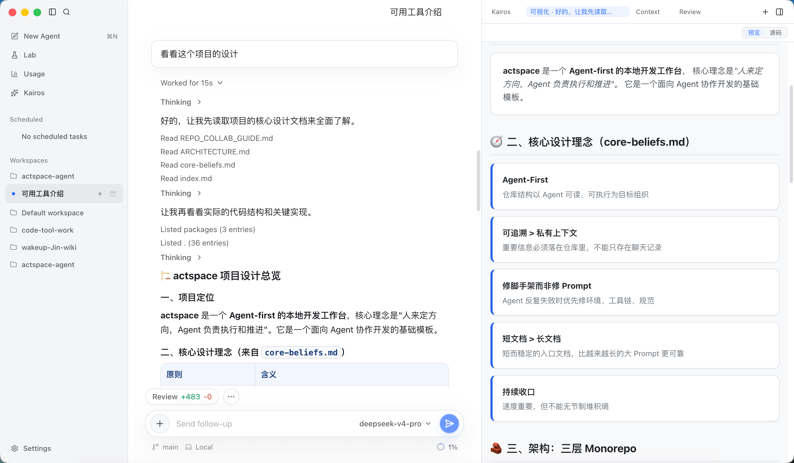
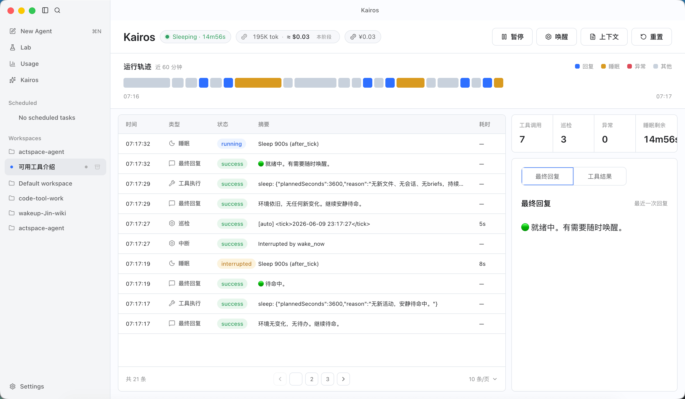
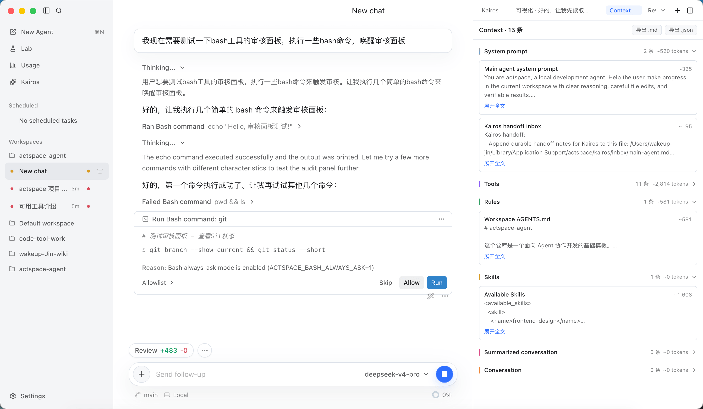
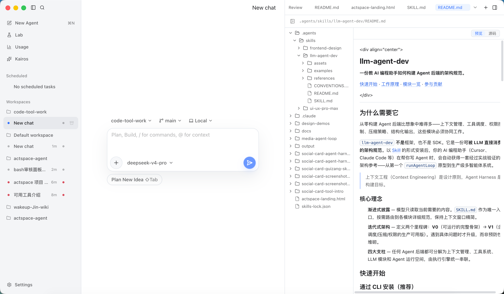
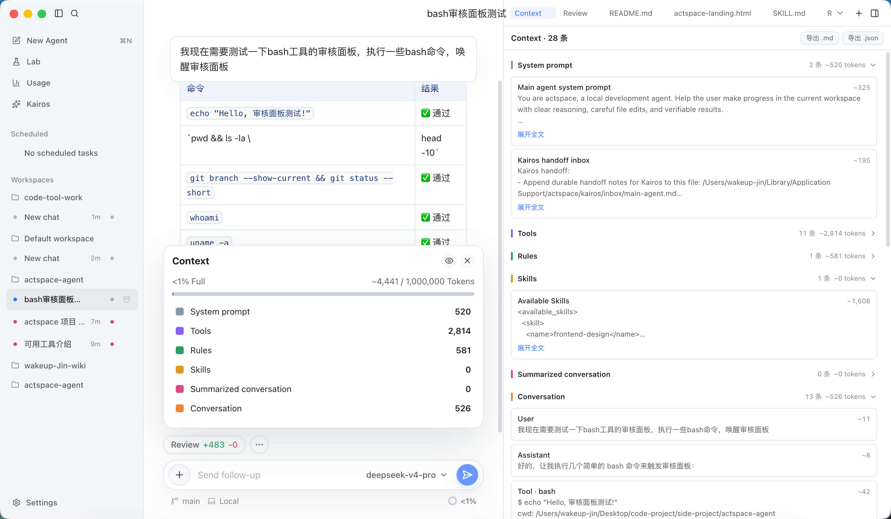

Actspace · README V1 (human)
分析报告：内容已经立住了，
问题集中在「卫生层」
针对 README_V1_human.md 的逐项分析：图片为什么不整齐（已定位根因）、六张截图逐张点评、文字细节清单，以及给出可直接粘贴的修复代码。
结构与内容
A−
骨架完整，「想说的话」比 V0 更有人味，致谢更真诚
截图质量
B
尺寸全部一致是亮点；1 张缺失、1 张空状态、Usage 未拍
细节卫生
C+
错别字、标点、空格、大小写问题约 10 处，发布前必须清
No. 1
图片不整齐：根因诊断
先说结论：不是图片比例的问题。我测了所有在用截图的实际尺寸：
| 文件 | 尺寸 | 宽高比 | 状态 |
|---|---|---|---|
home.png | 2940 × 1716 | 1.713 | 一致 |
kairos.png | 2940 × 1716 | 1.713 | 一致 |
tool-permission2.png | 2940 × 1716 | 1.713 | 一致 |
shot-usage.png | — | — | 文件不存在 |
file-preview.png | 2940 × 1716 | 1.713 | 一致 |
context-controle.png | 2940 × 1716 | 1.713 | 一致 |
review3.png | 2940 × 1716 | 1.713 | 一致 |
截图工作做得很标准——七张图全部同一窗口尺寸、同一比例。「一大一小」来自下面两个排版层的问题：
根因 ① — shot-usage.png 是 404
README 第 61 行引用了 docs/assets/readme/shot-usage.png（V0 的占位名），但目录里没有这个文件。渲染时左格只剩一个很小的裂图图标，右边的 file-preview.png 正常撑满半格——这一行就成了「一小一大」。补拍 Usage 页截图，或先把这一行换成已有的图。
根因 ② — 三个独立表格，列宽各自为政
三行截图写成了三个被空行隔开的表格。GitHub 的表格列宽由内容自适应：每个表格根据自己题注文字的长度分配列宽（「上下文控制与可视化」就比「Kairos 自治监控」宽），于是不同表格之间图片宽度对不齐。另外第 67 行表格和 ## 架构设计 之间没有空行，标题有解析风险。
修复方案 A：合并为一个表格（最简单）
六张图放进同一个表格，列宽全局统一，一处对齐处处对齐：
<!-- 同一表格内，GitHub 会统一两列宽度 -->
|  |  |
| :--: | :--: |
| Kairos 自治监控 | 工具执行与审批 |
|  |  |
| Usage 与缓存统计 | 文件预览 |
|  |  |
| 上下文控制与可视化 | Review |
注意：markdown 表格里「图行」和「题注行」交替时，第二行之后的图会被当成普通单元格内容——效果仍然正确，但严格说表头分隔线 | :--: | 只能出现一次，所以这种写法把第一行图当表头。介意的话用方案 B。
修复方案 B：HTML 表格 + 百分比宽度（最稳，推荐）
GitHub 允许 <img width> 属性，用 width="49%" 强制每张图等宽，彻底摆脱表格列宽的不确定性：
<table>
<tr>
<td align="center"><img src="docs/assets/readme/kairos.png" width="100%" alt="Kairos 监控页"><br><sub>Kairos 自治监控</sub></td>
<td align="center"><img src="docs/assets/readme/tool-permission2.png" width="100%" alt="工具执行流"><br><sub>工具执行与审批</sub></td>
</tr>
<tr>
<td align="center"><img src="docs/assets/readme/usage.png" width="100%" alt="Usage 统计"><br><sub>Usage 与缓存统计</sub></td>
<td align="center"><img src="docs/assets/readme/file-preview.png" width="100%" alt="文件预览"><br><sub>文件预览</sub></td>
</tr>
<tr>
<td align="center"><img src="docs/assets/readme/context-controle.png" width="100%" alt="上下文控制"><br><sub>上下文控制与可视化</sub></td>
<td align="center"><img src="docs/assets/readme/review3.png" width="100%" alt="Review"><br><sub>Review</sub></td>
</tr>
</table>HTML 表格的两列天然各占 50%，width="100%" 让图撑满单元格；<sub> 题注比表格行更轻盈。题注长短不再影响图片宽度。
No. 2
截图逐张点评

home.png — Hero 主图 很好
三栏同框：左侧会话栏、中间带 Thinking + 工具读取流的消息、右侧渐进式渲染。一张图同时演示了「执行可视化」和工作台形态，完全符合「代表作场景」的要求。内容也有巧思——让 Agent 介绍项目自己的设计，自指且真实。

kairos.png — Kairos 监控页 很好
运行轨迹色带、事件表、成本（¥0.03）、睡眠状态都在，是六张里信息密度最高的一张，「主动 Agent」的卖点立得住。

tool-permission2.png — 工具执行与审批 切题
Bash 审批面板（Allow / Run / Skip + Allowlist）和右侧 Context 面板同框，一图覆盖「审批」和「上下文可见」两个点。小瑕疵：右侧 Context 面板和 context-controle.png 内容重复，两张图区分度略低。
shot-usage.png — 文件不存在（404）
shot-usage.png — Usage 统计 缺失
这是「一大一小」的直接原因。Usage 页是「为 DeepSeek 而生 / 缓存命中」卖点的唯一视觉证据，建议优先补拍：拍出缓存命中率和成本数字的页面，文件名建议
usage.png（与其他命名风格一致，去掉 V0 的 shot- 前缀）。
file-preview.png — 文件预览 建议重拍
右侧文件树 + Markdown 渲染本身不错，但中间是 New chat 空状态，画面左 2/3 基本是空白，是六张里唯一「没有故事」的一张。建议在一个有对话内容的会话里重拍，或者直接换成右侧面板的特写。

context-controle.png — 上下文控制 最有说服力
Context 弹窗（1% Full、token 分项统计）+ 右侧 Context 面板同框，是「上下文绝对控制」的最佳证据，甚至比 hero 图更能体现产品差异。小问题：文件名拼写
controle → 建议改为 context-control.png。
review3.png — Review 切题
右侧 35 Uncommitted Changes + diff 统计（+1764 −409），「本地可追溯」立住了。注意：
review.png（1920×1050，比例 1.829）和 review2.png 没有被引用，属于遗留文件，建议删除，避免仓库里堆积废图。⚠ 体积提醒
七张图单张 540KB–980KB，总计约 5.2MB。GitHub 会走 CDN 但首屏加载仍然偏重，建议全部过一遍 oxipng / tinypng，目标单张 ≤ 300KB。另外可以考虑给 hero 图加外边框圆角阴影版本，或保持现状——目前的原生窗口阴影已经够干净。
No. 3
文字细节清单
内容判断都对，以下是发布前要清的「卫生层」问题，按行号列出：
| 行号 | 问题 | 建议 |
|---|---|---|
| 23 | 「其构建了一套Agent Harness，目的是让Deepseek能够获取更多的上下文，做更多的事情」 | ① Deepseek → DeepSeek（全文统一）；② 中英文之间加空格「一套 Agent Harness」；③ 句尾补句号；④ 「其构建了」开头较生硬，可改为「它构建了一套 Agent Harness，让 DeepSeek 获得更多上下文、做更多的事情。」 |
| 63 | 题注「文件预览」后少了空格：文件预览| | 格式统一为 | 文件预览 | |
| 67–68 | 表格和 ## 架构设计 之间没有空行 | 补一个空行，避免解析歧义 |
| 88 | 「这让我一个应用工程师很安心」 | 「让我这个应用工程师很安心」更顺口 |
| 89 | 行尾有多余的尾随空格 | 删除 |
| 90 | 「许多bug会被修复」「上下文可控性**」句尾无标点 | ① bug 前后加空格「许多 bug 会被修复」；② 句尾补句号；③ 这一句较长，可拆成两句 |
| 99–100 | 致谢两条用了 -- 而第 98 条用 —— | 统一为 ——，破折号前后格式对齐 |
| 102 | 「Linux.Do社区佬友们的公益站……」单独成条但无链接、与上一条部分重复 | 可与 101 行合并为一条：「[Linux.Do 社区](https://linux.do/latest)——真诚、友善、团结、专业；佬友们公益站的充足 Token，让本项目得以 Agent 原生开发、快速构建。」 |
⚠ 致谢里少了两个不该少的名字
① DeepSeek——整个 README 都在讲「为 DeepSeek 打造」，tagline、三原则、特性都围绕它，致谢里却没有它，逻辑上说不过去，建议放回第一条。② harness-template——现行 README 写明它是「本项目早期骨架来源」，从致谢中移除对原作者不太厚道（你新加的 code-develop-harness-init 如果是它的继承者，可以在同一条里说明渊源）。
✓ 这版改得好的地方
① 「想说的话」回到了你自己的口吻，「我特别希望有一个能够按照我自己想法构建的东西」比 V0 的修饰版更真；② 引文前加 <hr/> 分隔，仪式感更好；③ 致谢加入 Linux.Do 和自己的方法论项目，个人项目的致谢就该这样具体；④ 架构图改用 excalidraw 手绘的决定正确——手绘图比代码块依赖图更有温度，和「手写 README」的气质一致。
No. 4
发布前待办（按优先级）
- 补拍 Usage 页截图，命名
usage.png，更新第 61 行引用——这一步直接解决「一大一小」。 - 截图区改用方案 B 的 HTML 表格（或方案 A 合并表格），列宽永久统一。
- 重拍 file-preview.png：换一个有内容的会话，避免空状态画面。
- 清理文字细节：按第 3 节清单逐行修复（约 10 处）。
- 致谢补回 DeepSeek 和 harness-template。
- 清理图片资产：删除未引用的
review.png、review2.png；context-controle.png改名context-control.png（同步更新引用）；全部压缩至 ≤ 300KB。 - 画 excalidraw 架构图：建议就画你说的那张「被动/主动 × 被添加/自构建」四象限图——它是你独有的产品语言，比模块框图更值得放 README。
- 定稿后：
README_V1_human.md合入README.md，删除 V0/V1 草稿和分析文件，按 HISTORY_GUIDE 补一条变更记录。